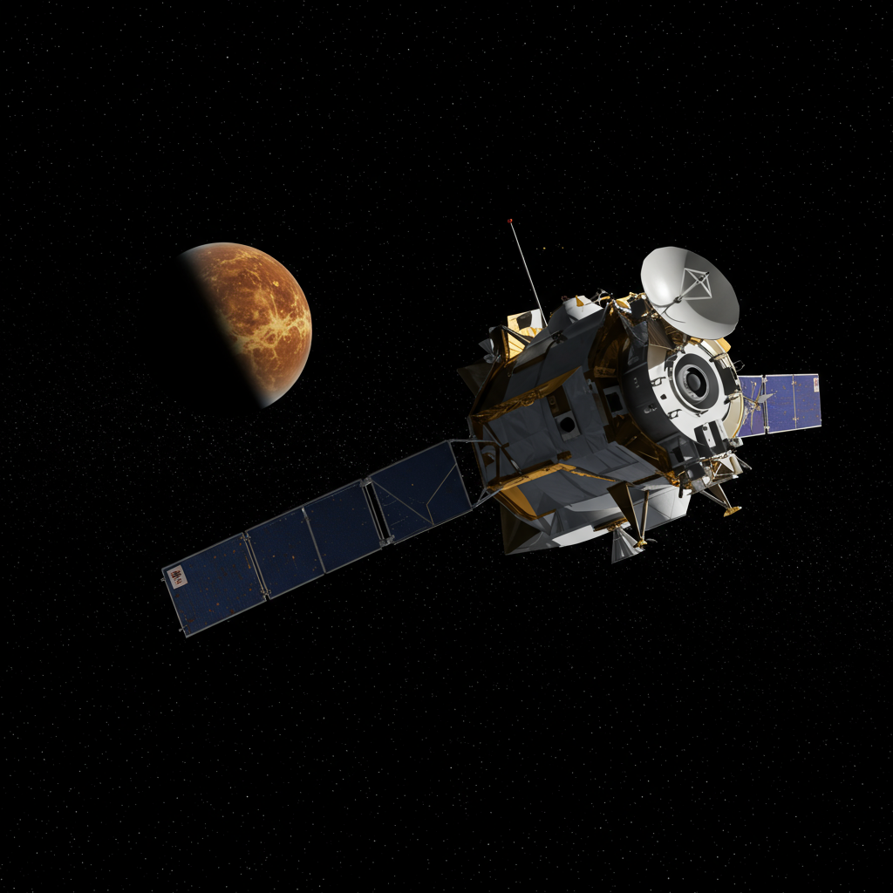

Programa Venera
Agencia: URSS (Roscosmos)
Período de actividad: 1961 – 1984
Tipo de misión: Exploración interplanetaria – Venus
Vehículos clave: Venera 7, Venera 9, Venera 13
Logros principales: Primer aterrizaje suave en otro planeta (Venera 7, 1970), primeras imágenes desde la superficie de Venus (Venera 9, 1975), análisis de suelo y audio desde otro planeta (Venera 13, 1982)
Duración en superficie: Desde 23 minutos (Venera 7) hasta 127 minutos (Venera 13)
Instrumentación: Cámaras panorámicas, espectrómetros, penetrómetros, transmisores, sensores térmicos y de presión
Impacto histórico
La serie soviética Venera marcó un hito en la exploración planetaria, siendo el primer programa en lograr aterrizajes exitosos en un mundo distinto a la Tierra. Sus naves sobrevivieron condiciones extremas de temperatura (465°C) y presión (90 atm), entregando imágenes, datos atmosféricos y registros sonoros únicos desde la superficie de Venus. La ingeniería del programa desafió los límites tecnológicos de la época, consolidando a la URSS como pionera de la exploración planetaria temprana.